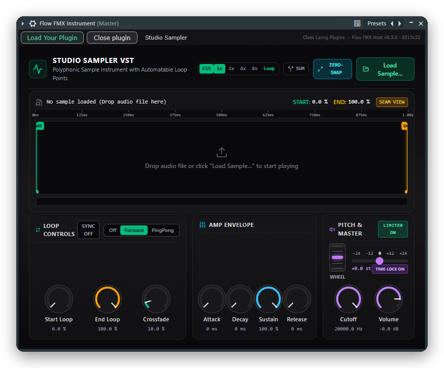
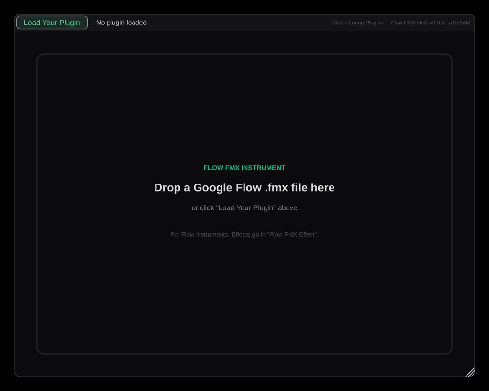
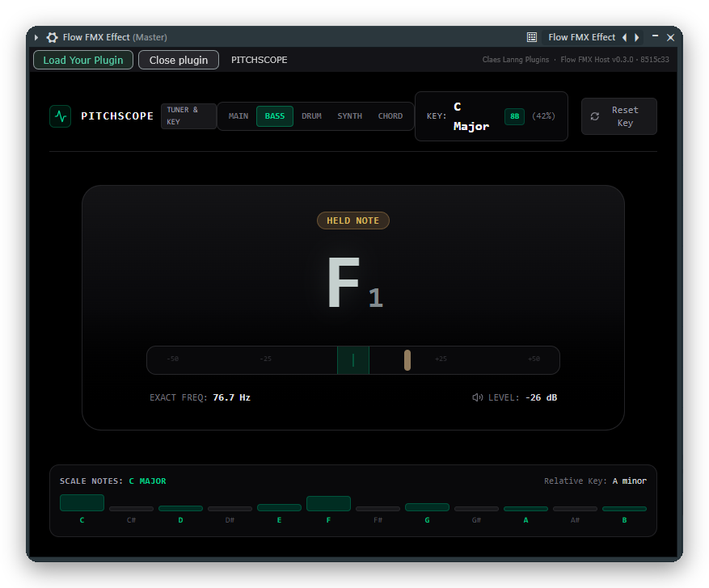

Studio Sampler
Instrument, for Flow FMX Instrument
A polyphonic sampler with loop points, an envelope, a filter and a pitch wheel. Drop in any sample and play it.
Download .fmxVersion 38, 504 KB
Run the plugins you build in Google Flow Music inside FL Studio on Windows.
Version 0.3. Free. VST3 for Windows 10 and 11, tested in FL Studio. Questions and updates on Patreon.

Google Flow Music lets you build your own instruments and effects and export them as .fmx files, but its own plugin only runs on macOS. Flow FMX Host opens those files on Windows.
.fmx shows the interface it was designed with, exactly as in Flow..fmx is stored inside the project, so it still opens if the file moves..fmx on the window to load it.One for instruments and one for effects.
For synths and samplers. Shows up in FL Studio as a generator in the Channel Rack.

For effects. Shows up in FL Studio as an effect for a mixer slot.

Made by Claes Lanng Plugins in Google Flow Music. Download one, then click Load Your Plugin in Flow FMX Host or drag the file onto its window.
Instrument, for Flow FMX Instrument
A polyphonic sampler with loop points, an envelope, a filter and a pitch wheel. Drop in any sample and play it.
Download .fmxVersion 38, 504 KB

Effect, for Flow FMX Effect
A tuner and key detector with five modes: Main, Bass, Drum, Synth and Chord. The Flow version of PitchScope.
Download .fmxVersion 32, 480 KB

Effect, for Flow FMX Effect
A four-band stereo widener with a built-in guard: it automatically pulls back the width in any band that would cancel out or lose level when your mix is played in mono.
Download .fmxVersion 25, 509 KB
Needs Windows 10 or 11 (64-bit) and the Microsoft Edge WebView2 Runtime, which almost every Windows PC already has.
FlowFMX-Windows-x64.zip and unzip it..vst3 folders into C:\Program Files\Common Files\VST3..fmx file, or drag the file onto the window. No plugin of your own yet? Try one of the free Flow plugins.If the plugin window stays blank, install the Evergreen WebView2 Runtime from Microsoft.